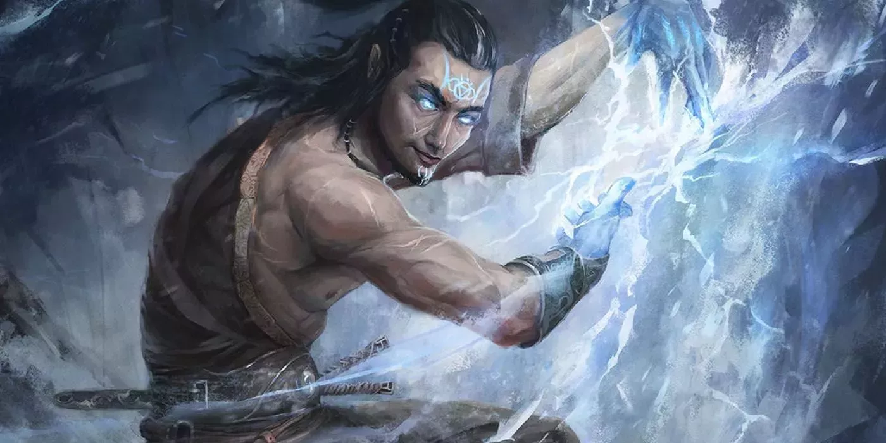

Esta clase se centra en lanzar hechizos, lo que le diferencia es su "metamagia", que es la capacidad de dar efectos a sus hechizos, por ejemplo, más daño, mas area, evitar dar a compañeros... son una de las clases con menos vida y defensa del juego, suelen ir a ultima linea.
Los hechiceros a diferencia de otras clases mágicas, consiguieron su magia de forma natural, naciendo especial, siendo bendecido por un dios, desarrollandola al vivir en una zona con mucha magía... Pueden manipular sus propios hechizos dandoles efectos unicos de su clase y ha diferencia de los magos utilizan su carisma para los hechizos por lo que también los hace más sociales. Eso si tienen poca vida y armadura, es lo que suele caracterizas a las clases mágicas, asi que suelen ponerse al final del equipo